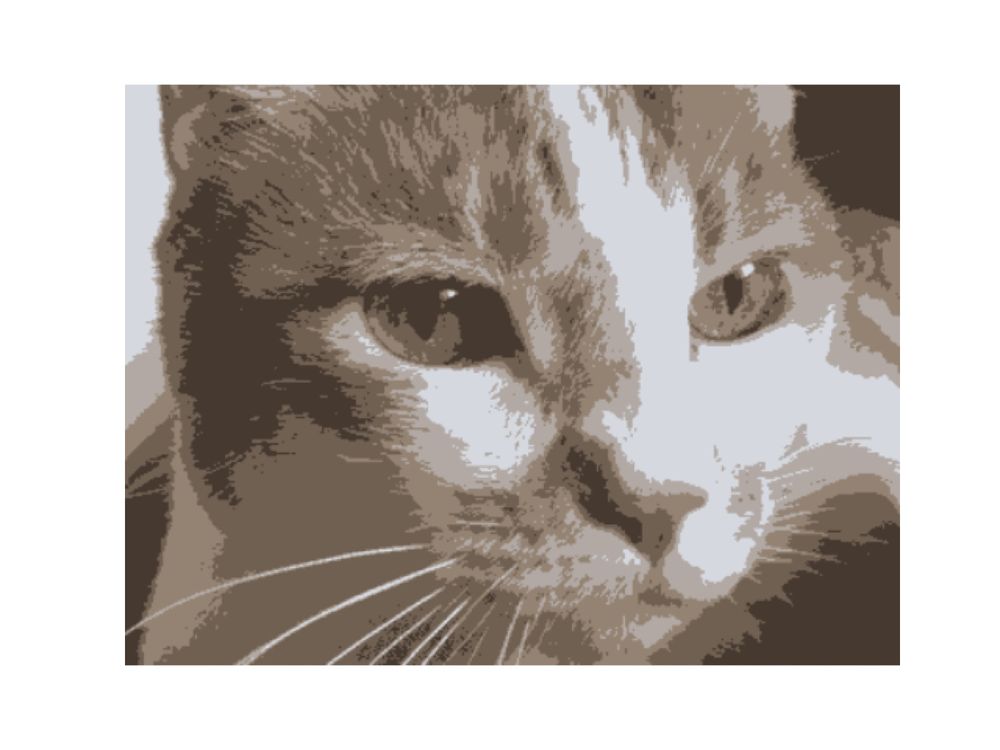

"Sistemi operativi". Laurea triennale in Matematica, Università di Roma, ''La Sapienza'', anno accademico 2016/2017.
Un'introduzione al sistema operativo Linux, ai linguaggi di programmazione ad alto livello, e alla machine learning in Python
Find here the bibliography.
Introduction to Linux. The lesson program and material.
Brief introduction to Python. The lesson program and material.
Basic Python operating system interface. The lesson program and material.
A simple illustration to the Python module Scipy with some examples (numerical integration, linear regression, figures). The lesson material.
A simple random number generation project. Random number generation from a given distribution and the Box-Mueller algorithm. Illustration of the Central Limit Theorem. The lesson material.
Some elements of classes in Python. The lesson material.
A simple random graph generation project (an illustration of the usage of classes and recursivity). Generation of random graphs. The degree distribution of random graphs. Calculation of connected components of a graph. The percolation threshold of a random graph. The lesson material.
An implementation of the K-means clustering algorithm. It is illustrated with sets of 2D Gaussianly generated data, and with an algorithm posterizing an image (reducing the colors of the image associating each color pixel to one out of K colors). The lesson material.

image posterized with the K-means algorithm